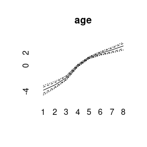
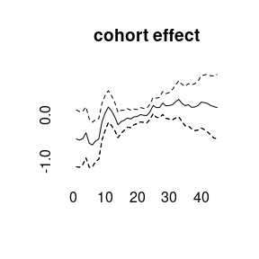
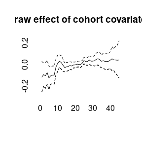
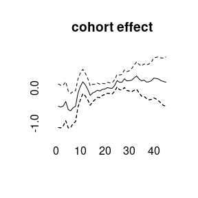
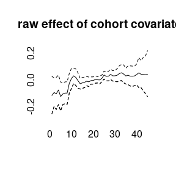

Bayesian Age-Period-Cohort Modeling
Volker Schmid
2022-01-19
Source:vignettes/largevignettes/modeling.Rmd
modeling.RmdData example
BAMP includes a data example.
data(apc)
plot(cases[,1],type="l",ylim=range(cases), ylab="cases", xlab="year", main="cases per age group")
for (i in 2:8)lines(cases[,i], col=i)
APC model with random walk first order prior
model1 <- bamp(cases, population, age="rw1", period="rw1", cohort="rw1",
periods_per_agegroup = 5)##
## Automatic check procedure removed 1 Markov chain. Please check for convergence using checkConvergence() and maybe change your model settings (maybe add overdispersion).bamp() automatically performs a check for MCMC convergence using Gelman and Rubin’s convergence diagnostic. We can manually check the convergence again:
checkConvergence(model1)## [1] TRUENow we have a look at the model results. This includes estimates of smoothing parameters and deviance and DIC:
print(model1)##
## Model:
## age (rw1) - period (rw1) - cohort (rw1) model
## Deviance: 231.33
## pD: 36.82
## DIC: 268.16
##
##
## Hyper parameters: 5% 50% 95%
## age 0.352 0.911 1.914
## period 66.500 196.313 619.346
## cohort 35.126 59.319 98.755
##
##
## Markov Chains convergence checked succesfully using Gelman's R (potential scale reduction factor).We can plot the main APC effects using point-wise quantiles:
plot(model1)

More quantiles are possible:
plot(model1, quantiles = c(0.025,0.1,0.5,0.9,0.975))

APC model with random walk second order prior
model2 <- bamp(cases, population, age="rw2", period="rw2", cohort="rw2",
periods_per_agegroup = 5,
mcmc.options=list("number_of_iterations"=200000, "burn_in"=100000, "step"=50, "tuning"=500),
hyperpar=list("age"=c(1,.5), "period"=c(1,0.05), "cohort"=c(1,0.05)))##
## Automatic check procedure removed 1 Markov chain. Please check for convergence using checkConvergence() and maybe change your model settings (maybe add overdispersion).
## Warning: MCMC chains did not converge!checkConvergence(model2)## Warning: MCMC chains did not converge!## [1] FALSEprint(model2)##
## WARNING! Markov Chains have apparently not converged! DO NOT TRUST THIS MODEL!
##
## Model:
## age (rw2) - period (rw2) - cohort (rw2) model
## Deviance: 233.94
## pD: 36.77
## DIC: 270.71
##
##
## Hyper parameters: 5% 50% 95%
## age 1.001 2.918 6.610
## period 16.395 41.703 91.754
## cohort 23.690 44.558 81.006plot(model2)


model3<-bamp(cases, population, age="rw1", period=" ", cohort="rw2",
periods_per_agegroup = 5)checkConvergence(model3)## [1] TRUEprint(model3)##
## Model:
## age (rw1) cohort (rw2) model
## Deviance: 276.78
## pD: 30.24
## DIC: 307.02
##
##
## Hyper parameters: 5% 50% 95%
## age 0.285 0.711 1.476
## cohort 37.991 74.151 140.697
##
##
## Markov Chains convergence checked succesfully using Gelman's R (potential scale reduction factor).plot(model3)

(model4<-bamp(cases, population, age="rw1", period="rw1", cohort="rw1",
cohort_covariate = cov_c, periods_per_agegroup = 5))##
## Model:
## age (rw1) - period (rw1) - cohort (rw1) model
## Deviance: 231.21
## pD: 36.79
## DIC: 268.00
##
##
## Hyper parameters: 5% 50% 95%
## age 0.363 0.915 1.977
## period 66.572 196.755 597.112
## cohort 35.011 59.305 96.936
##
##
## Markov Chains convergence checked succesfully using Gelman's R (potential scale reduction factor).plot(model4)


 

(model5<-bamp(cases, population, age="rw1", period="rw1", cohort="rw1",
period_covariate = cov_p, periods_per_agegroup = 5))##
## Model:
## age (rw1) - period (rw1) - cohort (rw1) model
## Deviance: 231.33
## pD: 36.98
## DIC: 268.32
##
##
## Hyper parameters: 5% 50% 95%
## age 0.350 0.924 1.941
## period 64.539 197.622 631.998
## cohort 33.974 59.102 97.111
##
##
## Markov Chains convergence checked succesfully using Gelman's R (potential scale reduction factor).plot(model5)